公开课
多元创作探索：拍照旅行、拼贴体验、木板油画技巧与艺术导师的指引
欢迎大家，这里是初艺。工作室的门再次为我们敞开，带着一股新的活力。我想和大家分享一些我最近参观的展览。这些展览包括了各种各样的内容，从文物到油画，还有一些装置艺术。
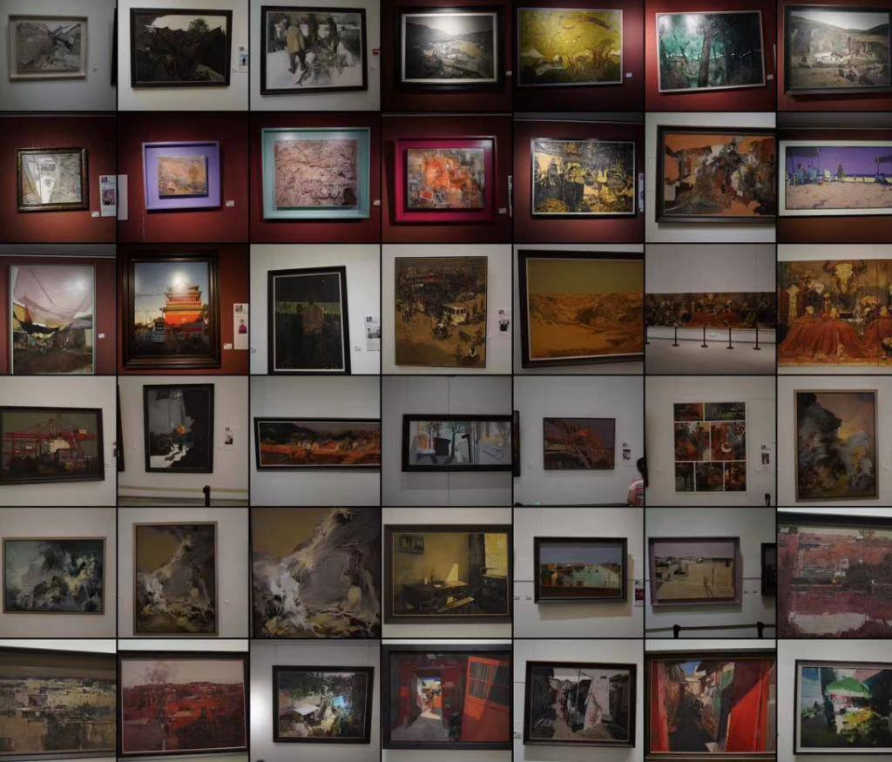
在这次的分享中，我将使用一个平板电脑来展示我参观过的展览的一些图像内容。我并不会提供传统的讲解，而是将分享一些我个人的感受和看法。希望这能够为大家带来一些启发。
首先，我想谈谈大同市的一个展览。这是白羽平老师的工作室展。关于工作室里都有哪些成员，我并不是很清楚，因为在我欣赏作品的过程中，并没有过多关注画作的作者身份。我更注重的是作品本身。
这种方式可能与我们在课程中学到的有所不同，比如了解大师的生平，这有助于我们更好地理解他们的作品。但在一些展览中，我更倾向于不去过多关注这些信息。因为，如果我们以图像为主，就像你们看到一幅画，最直接的感受就是从图像本身出发。然而，如果你先了解了作者的背景，再去看作品，可能会感到有些干扰，从而无法纯粹地以视觉方式欣赏作品。
所以，在我看展览的时候，我更愿意避开这些背景信息。当然，这并不是说我完全忽略了艺术家的重要性，而是在我个人的视觉体验中，我更愿意专注于作品本身。
这次展览中，作品的整体主题是什么呢？我并没有看作品的名称，也没有阅读介绍，因为有些作品甚至没有提供介绍。这副作品的技法呢，多半是基于基理的方式，虽然每幅作品的基理堆叠方式略有不同，但总体上相似。这种方式以一些裂纹的元素为特点，还有一些层叠的纹理，给人留下了深刻的印象。
而作品的内容，则主要是关于建筑和景观。一些古建筑和历史遗迹成为了画面中的元素，画面中还融入了许多精美的纹饰，如窗户上的图案、边角处的装饰。这些纹饰都引起了我的注意。
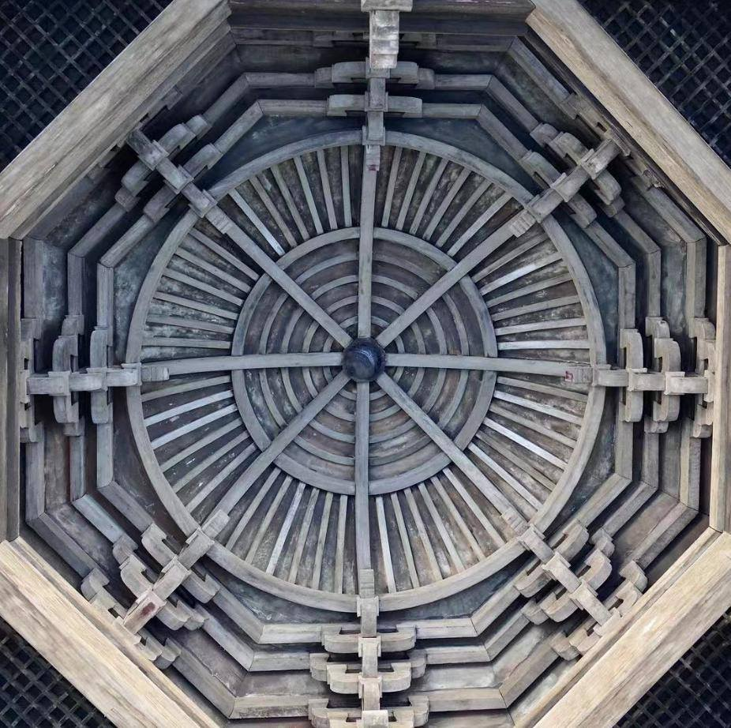
对我个人来说，摄影是一项重要的爱好。在我拍摄古建筑的时候，我更加关注一些细微的纹饰。因为这些细节在摄影作品中，不论大小，都能够保留下来，不会因为尺寸而失去细节。
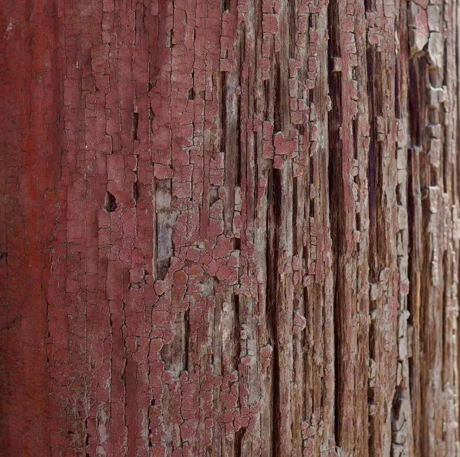
所以，在参观展览时，我也会专注于一些纹饰和图案。这在我获取资料时会很有用，不至于在欣赏建筑或器物时，过于关注尺寸。我发现，这些纹饰可以持久地留存下来，而不会像实体建筑那样因为离开现场而消失。
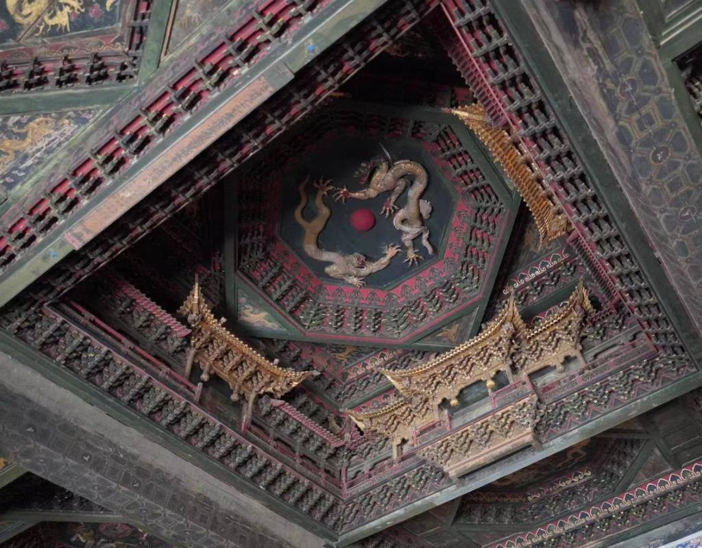
对于我来说，拍摄是一种方式，可以将这些纹饰记录下来，这对我的创作和资料积累都很有帮助。当然，我们在摄影时也追求构图和色彩等方面，这些也是很重要的。
我只是想表达，对于我个人而言，更多地关注纹饰和图案，对我在创作和欣赏中都有着实际的价值。这只是我的一些建议，或许在你们的旅程中也能有所帮助。
继续探索这次画展的作品。我将一张一张地过去，看看每一幅画的特点和作者的创作思路。
嗯，这张作品的画面非常大，采用了一种拼贴的方式。我认为这种组合的方式很好，能够创造出一种有趣的整体效果。尽管这种方式在装饰画、美院的毕业展以及酒店装饰画中并不罕见，但这种形式仍然可以通过巧妙的组合创造出非常有趣的效果。比如说，画面中的方形可以进一步分割，从而形成更多有趣的组合。我觉得这种形式正是我想要的，所以我拍下了它，作为留念。
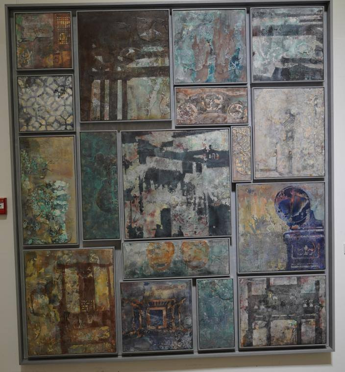
然后，看看这张肌理丰富的作品，整体的色调非常统一。我注意到，有些作品给人舒适的感觉，可能是因为整体的色调相对较为统一。作者在绘画中使用了一些类似现色的方法，但其中的一些颜色也经过了调和，让我想起了摄影中的色彩平衡。个人而言，这种色调的处理也是我喜欢的类型。
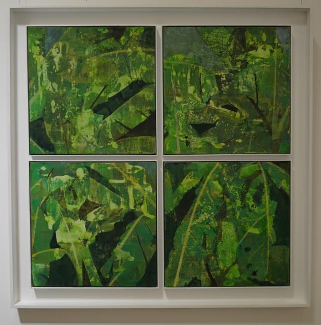
然后我们来看下一张作品，对它我不是特别喜欢。在欣赏一张画时，每个人都有自己的喜好，这种喜好完全是个人的，与其他人无关。就像听音乐一样，个人的品味是主观的，没有好坏之分。对于这张作品，我不喜欢的原因在于画面显得过于灰暗，视觉上有些混乱，让我觉得不够吸引人。我认为画面的完成度也不是很高，关于何时一幅画被认为完成也是一个问题。对于作者来说，这幅画可能已经完美，但对我来说还有改进的空间。这提醒我们，完成度是一个主观的标准，因人而异。
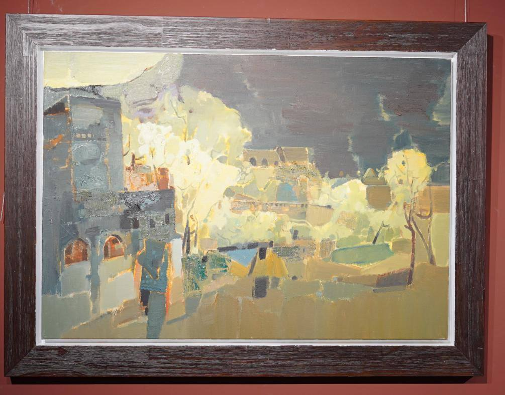
对于每幅作品，我可能会提出一些不同的问题，但我会保持中立，旨在分享观点，而不是批评或赞美。我注意到一些作品在整体风格上比较相似，这可能是因为某些老师的影响，但也可能会导致创作形式过于相似。在现代绘画中，多样性和创新性是很重要的，因为时代和观众的需求都在变化。
接下来，我注意到一些作品采用了有趣的色彩层次。颜色在画面中的运用很巧妙，前景和远景的颜色处理都非常和谐。作者可能有意识地运用了不同的色调，通过调整明度和饱和度，创造出一种吸引人的效果。这些画作中的色彩选择和运用是我欣赏的地方，它们为画面增添了活力。
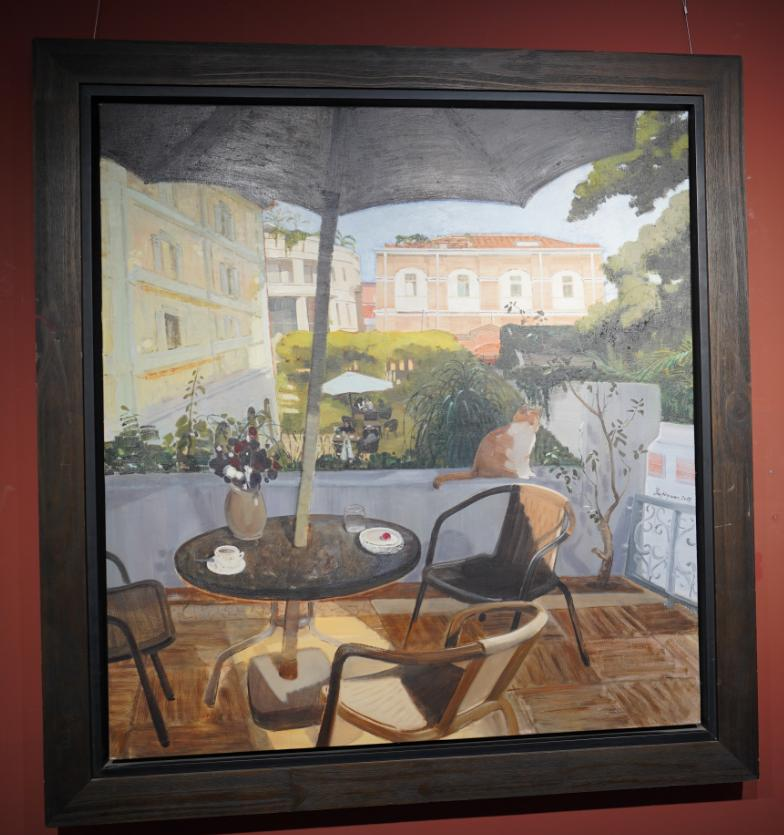
此外，还有一幅画吸引了我的注意，因为它采用了木板作为画布。作者保留了木板的纹路，使画面增添了一种独特的质感。这种画布的选择对于创造特定的肌理和触感非常有用，为作品带来了更多层次感。另外，作者对明暗的处理也很出色，通过斜线的运用创造了强烈的透视效果。
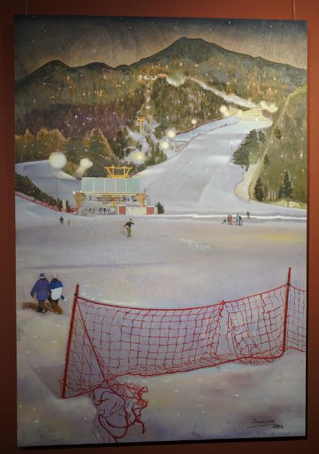
我想强调一下，每个人对于作品的喜好都是不同的。就像音乐一样，绘画也是一种个人的表达方式，没有绝对的对与错。不同的画家和作品风格都有其独特之处，而观众的喜好也是多元的。因此，我们在欣赏作品时，应该保持开放的心态，理解作者的创作意图，同时也尊重自己的感受和看法当我继续浏览这些作品时，我发现了另一种特点，那就是一些画家在色彩使用上的突破。他们探索了不同的调色方法，创造出独特的视觉效果。这些画作中的色彩变化很大，从暖色调到冷色调，从明亮到昏暗，每一种色彩都为作品带来了不同的情感和氛围。这种多样性让我不禁想到，现代绘画正面临着更多的挑战和可能性。
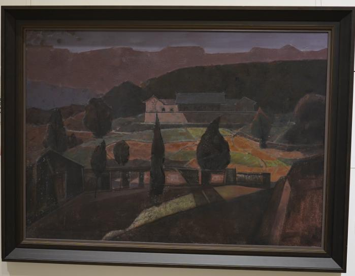
另一幅作品引起了我的兴趣，因为它运用了有机几何图形来创造画面。画家通过线条和形状的排列，打造出一种抽象但又具有吸引力的效果。这种现代感在绘画中的运用，让我感受到了创作者的实验精神和勇气。当代艺术正是通过这样的创新，不断探索新的艺术表达方式。
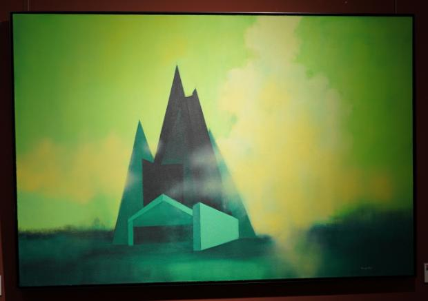
还有一些作品采用了类似风景画的构图，但运用了现代的绘画技法。作者可能在自然风景的基础上加入了自己的想象和创意，创造出了独特的场景。这种融合和创新让作品具有了更多的层次和深度，也让观众能够从不同的角度去解读和欣赏。
观看每幅作品时，我注意到一些画家在处理前景、中景和远景时的不同方法。有些画家注重前景的写意和厚重感，有些则在中景的构图和细节上下功夫。这种差异体现了不同画家对于空间感和透视的理解和表达。通过这种对比，我也更加深刻地认识到绘画是多样的，每个画家都有自己的视角和风格。
最后，我想说的是，这次画展让我感受到了绘画的多样性和创新性。在现代艺术中，每一位画家都有机会探索不同的风格、技法和表达方式。观众也应该保持开放的心态，欣赏多样的作品，从中寻找与自己共鸣的部分。无论是传统还是现代，每一种艺术形式都有其独特的价值和意义，都值得我们去探索和理解。
我希望这次的观察和点评能够为大家提供一些不同的视角，让大家更深入地了解这次画展的作品。艺术是一种美妙的语言，能够引发无限的思考和情感。愿我们能够在这个多彩的艺术世界中，找到属于自己的那份美与感动。感谢大家的陪伴和阅读。